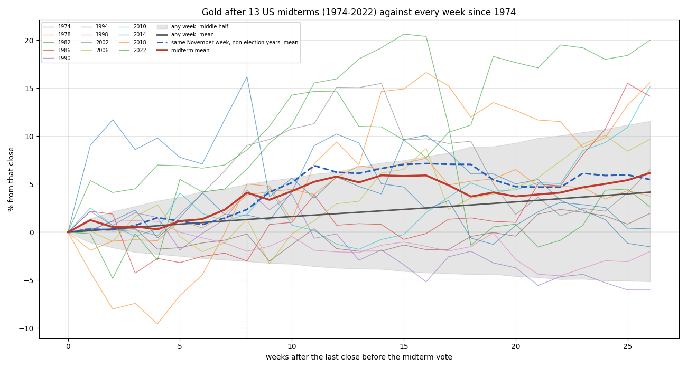

RS-XAUUSD-20261019-001 · XAUUSD · 2026-10-19
After 13 US midterms gold dipped and then rose 10% from the low in 7 — the same rate as from the same November week in 26 odd years (no regular federal election); no election effect is visible
美國期中選舉後，黃金是否比平常更常先跌、再漲 100 美金左右？
影片 Video
在 YouTube 觀看：EP02｜期中選舉後黃金先跌再漲？13 次逐年拆解＋總統大選年對照｜黃金筆記 ↗
一分鐘重點（Shorts）：
Headline Metrics 關鍵數字
Key Findings 重點發現
先跌，但跌得很少，和隨便一週分不出差別
13 次裡 11 次（84.6%）在選後 8 週內先跌，跌幅中位數 −1.85%。隨便哪一週起算（n=2,729）有 76.9% 先跌，8 週內最低點的中位數是 −2.16%。先跌的比例差 7.7 個百分點，樣本要差 32.7 個百分點才分得出來（事後補算）；跌幅中位數沒有算界線。所以「先跌」和隨便一週分不出差別，看不出選舉的影響。
先跌再漲 10%：54%，和奇數年同一週一樣
13 次裡 7 次（54%）先跌、再從低點漲 10% 以上。26 個奇數年（沒有例行聯邦大選）的同一週也是 54%（差 0 個百分點，界線 38.7）；隨便哪一週（n=2,729）是 37%（差 17 個百分點，樣本要差 37.5 個百分點才分得出來）。兩個比較都分不出差別。
選後半年報酬分不出差別
選後 26 週平均 +6.17%（n=13）；26 個奇數年同一週 +5.49%（差 0.7 個百分點，界線 10.8），隨便一週 +4.16%（n=2,729；差 2.0 個百分點，樣本要差 11.7 個百分點才分得出來）。
100 美金是金價水位造成的（事後描述）
事後描述（預先登記只寫 S100 會報告，不拿來跨年代比較）。2010 年以後 4 次期中選舉，從 8 週內的低點到 26 週內的高點都漲超過 100 美金，因為金價已在 1,100 以上；其中 2010、2014、2018 三次有先跌，符合「先跌再漲 100」的只有這 3 次，2022 年 8 週內沒有跌破起點（+4.13%）。2010 年以前只有 1982 年做到。以 2026-10-16 收盤約 4,168 計算，100 美金只有 2.4%；全部週數（n=2,729）裡有 67% 先跌、再從低點漲 2.4% 以上。
總統大選後也沒有比較好，也分不出差別
13 次總統大選後 26 週平均 −0.69%，先跌再漲 10% 只有 15%（2/13）。和奇數年同一週比，26 週平均差 −6.2 個百分點（界線 10.8），漲 10% 的比例差 −38.5 個百分點（界線 38.7，剛好沒分出來）；和隨便一週比，分別差 −4.9（界線 11.7）與 −21.7（界線 37.5）。都分不出差別。
Chart 圖表


詮釋與實務意義
這份資料看不到期中選舉的額外效應：13 次期中選舉的走勢和奇數年同一週分不出差別，13 次的樣本只排除得了很大的效應。「先跌再漲 10%」在 13 次裡有 7 次（約一半）。至於是不是黃金 11 月到隔年春天的季節性，這份研究沒有檢驗，事後補算也分不出差別。「100 美金」只在金價高的年代容易成立。今年的投票日是 11/3（台北 11/4），不能當進出場依據。
限制與注意事項
- 只有 13 次期中選舉，期中選舉的每個比較，差距都遠小於分得出來的門檻（最大的是 S10 對隨便一週，差 17 個百分點、門檻 37.5），只有非常大的效應才看得到。總統大選的比較另計，其中 S10 對奇數年同一週差 −38.5、門檻 38.7，貼著門檻。
- 全部用週收盤，看不到週內的低點；只有 2010–2022 年 4 次期中選舉用日線抽查。
- 設計前先快速看過 14 次期中選舉的結果（先跌再漲 10% 為 8/14），10% 這個門檻是看過之後才命名的；設計、程式與結果在同一個 commit，無法用時間戳驗證先後。
- 每個觀察期都包含 12 月 FOMC，無法分開它的影響。
- 圖中的灰帶是「隨便一週起算的單一路徑」的中間一半，不是 13 次平均線的誤差範圍。
- 命名：圖例與 results.json 的對照組標籤寫「non-election years」，指的是 26 個沒有例行聯邦大選的奇數年（奇數年仍可能有聯邦補選）；數字不受影響。
- 沒有檢驗「11 月到隔年春天的季節性」：奇數年同一週、或把 52 個 11 月合併，和隨便一週也分不出差別（事後補算，2026-11-04）。